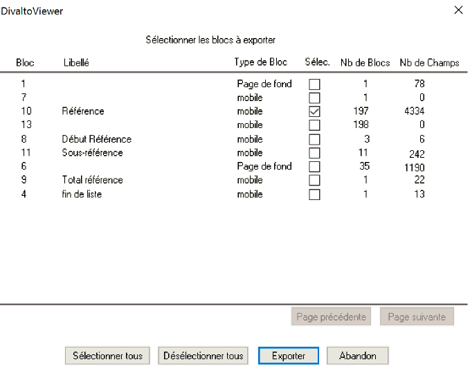

Le bouton EXL de la barre d'outils de DivaltoViewer permet d'exporter un état dans un fichier tableur .xlsx, à condition que la génération des données pour l'export tableur n'ait pas été invalidée dans les options de DivaltoViewer (voir la rubrique Paramétrage de l'export tableur des états imprimés).
Lors de l’impression, DivaltoViewer conserve les numéros des blocs imprimés. Ceci permet ensuite à l'utilisateur de choisir les blocs qu'il souhaite exporter. En effet, à cette occasion, on souhaite généralement ne conserver que les "lignes détails" (pour, par exemple, effectuer des cumuls), à l'exclusion des blocs récapitulatifs, des blocs d'en-tête ou de pied, ...
Exemple :
